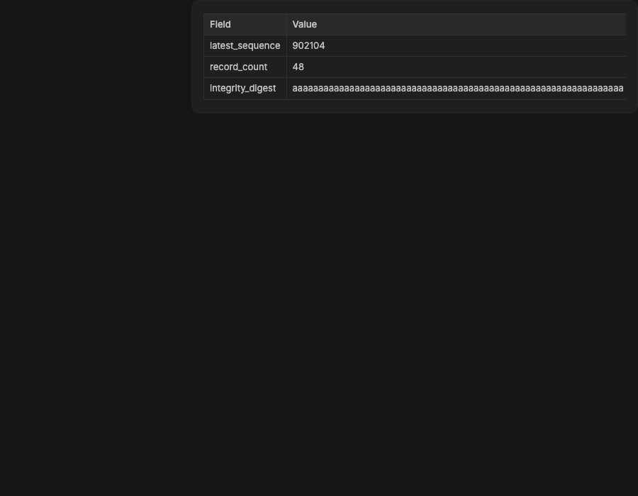

#3269 · Markdown table breakout collapses content-sized messages
Verdict: PARTIALLY REPRODUCED · Root-cause confidence: medium
1. TL;DR
The intermittent flicker itself did not appear in Chrome 152, so that visible claim remains unverified. The trusted production Markdown component did reproduce a more severe failure in the same user-message layout: the Markdown content width became 0px, the bubble shrank to its 34px horizontal padding and border, and a 665.0625px table was clipped away. A CSS diagnostic that removed only the breakout wrapper's oversizing restored a 596px content width and 630px bubble. Source inspection shows a cyclic sizing relationship between shrink-to-fit message ancestors, the table breakout width, and geometry values written by the table observer.
2. Claims vs findings
| Claim | Status | Evidence |
|---|---|---|
| A completed table can visibly flicker. | Unverified | Neither clean run alternated after load. Each delivered one observer notification at a stable 0px content width. |
| The table layout can fail to settle to a valid width inside a user message. | Verified | Both clean checkouts produced content 0px, bubble 34px, and table 665.0625px at a 900px viewport. |
| The failure is independent of provider streaming. | Verified | The reproduction mounts the production MarkdownPreview with static content and starts no BB server or provider. |
| The breakout geometry is involved. | Verified | Changing only the breakout wrapper to 100% width with zero inline margin restored content 596px and bubble 630px in both runs. |
| The exact reporter data or application build is necessary. | Unverified | The report uses independent synthetic values on trusted origin/main; it does not run an installed application bundle or issue-supplied fixture. |
3. Environment
- Trusted bb commit:
d9f2ac5a4390b8b8507da3cc32a3bae01fc3f868, fetched fromorigin/mainon 2026-09-08. - macOS 26.6.1 arm64, Node v22.22.3, Chrome 152.0.7977.75, doobie 0.1.2.
- First Ladle instance: port 55123. Second clean checkout: port 55124. No BB server, host daemon, data directory, or provider session was used.
pnpm install --frozen-lockfile --prefer-offlineandpnpm exec turbo run buildpassed in both checkouts.
4. Minimal reproduction
- Check out the base commit, install, and build.
git checkout d9f2ac5a4390b8b8507da3cc32a3bae01fc3f868 pnpm install --frozen-lockfile --prefer-offline pnpm exec turbo run build
- Create
apps/app/src/components/ui/issue-3269-repro.stories.tsxwith this fixture. It imports the production renderer and recreates the user message's trusted repository classes.import { MarkdownPreview } from "./markdown-preview"; const CONTENT = `| Field | Value | State | | --- | --- | --- | | latest_sequence | 902104 | ready | | record_count | 48 | ready | | integrity_digest | aaaaaaaaaaaaaaaaaaaaaaaaaaaaaaaaaaaaaaaaaaaaaaaaaaaaaaaaaaaaaaaa | verified |`; export default { title: "repro/Table Width Cycle", }; export function Layout() { return ( <div className="@container/page min-h-screen w-full overflow-auto bg-background"> <div className="w-full" data-message-column=""> <div className="group/message ml-auto flex w-fit max-w-[70%] flex-col items-end"> <div className="flex w-fit max-w-full flex-col items-end"> <div className="max-w-full rounded-xl border border-border-seam bg-surface-recessed px-4 py-2.5 text-sm leading-relaxed text-foreground"> <div className="max-h-[15lh] overflow-hidden break-words"> <MarkdownPreview content={CONTENT} /> </div> </div> </div> </div> </div> </div> ); } - Start Ladle on a free isolated port and run the focused browser assertion at 900×700.
pnpm --dir apps/app exec ladle serve --port 55123 doobie --headless -b table-layout-repro -t 15 <<'EOF' const page = await browser.getPage("regression"); await page.setViewport({ width: 900, height: 700, deviceScaleFactor: 1 }); await page.goto("http://127.0.0.1:55123/?mode=preview&story=repro--table-width-cycle--layout"); await page.waitForSelector("table", { visible: true, timeout: 5000 }); await page.evaluate(() => { const table = document.querySelector("table"); const content = table.closest("[data-markdown-preview]"); const bubble = content.parentElement.parentElement; const widths = { content: content.getBoundingClientRect().width, bubble: bubble.getBoundingClientRect().width, table: table.getBoundingClientRect().width, }; if (widths.content <= 0 || widths.bubble <= 34) { throw new Error(`collapsed table layout: ${JSON.stringify(widths)}`); } return widths; }); EOFExpected: the assertion returns positive content and bubble widths. Actual in both clean runs:
Error: collapsed table layout: {"content":0,"bubble":34,"table":665.0625}

width:100% and margin-inline:0 restores the 630px bubble and visible table. This is evidence, not a proposed production patch.Verification in a second clean checkout
A fresh clone was checked out at the same full commit, installed and built independently, and served on port 55124 with a separate named Chrome profile. The focused assertion failed with the identical values: content 0px, bubble 34px, table 665.0625px. The diagnostic override again restored content 596px and bubble 630px. No report claim was broadened after the rerun; the verdict remains partial because no oscillation or live-window flicker was observed.
5. Root cause
The production table wrapper requests a width that is at least 100% of its parent but may expand toward the page container width, then centers itself with a negative margin. See the table wrapper at lines 904–925. The user bubble containing it is shrink-to-fit twice and capped at 70% of the message column; see the user-message layout at lines 437–449. The Markdown body is also horizontally clipped while collapsed; see lines 269–293.
That makes the child's breakout width depend on a shrink-to-fit ancestor whose intrinsic width is itself affected by the child. The geometry observer adds another edge to the cycle: it measures the Markdown content and clipping ancestor, then writes --md-content-w and --md-table-breakout-max back onto the breakout element. See measurement and writes at lines 1340–1369, observation at lines 1372–1446, and the breakout limit calculation at lines 1471–1517.
Chrome 152 resolves this cycle at the tested viewport by collapsing the Markdown content to zero. Because the content setter ignores non-positive widths, the fallback breakout remains page-sized while the overflow-hidden body clips it. The diagnostic override removes the child-to-ancestor sizing dependency, so the bubble immediately expands to its 70% cap. This explains the reproduced collapse with high confidence; connecting the same cycle to intermittent oscillation in another browser or embedded application build remains medium-confidence.
6. Proposed fix (first principles)
Break the cyclic width dependency rather than suppressing observer notifications. The breakout's available width should come from a stable ancestor outside the shrink-to-fit bubble, and observer-written values must not feed back into the intrinsic width of the element being observed. Preserve wide-table breakout and horizontal scrolling for normal prose while giving content-sized user messages a definite containing width. Add a real-browser regression that mounts the production renderer inside the user-message classes, asserts non-zero content and bubble widths at representative viewports, and verifies that observer deliveries settle.
7. Related issues and pull requests
No open pull request links to #3269. A sample of recent ui issues was reviewed for classification patterns; none supplied a verified duplicate for this layout path.
8. Appendix
Measured results
first clean checkout viewportWidth: 900 observer notifications over 1.2s: 1 observed content widths: [0] final content width: 0 final bubble width: 34 final table width: 665.0625 second clean checkout viewportWidth: 900 observer notifications over 1.2s: 1 observed content widths: [0] final content width: 0 final bubble width: 34 final table width: 665.0625 diagnostic control in both checkouts content width: 596 bubble width: 630 table width: 665.0625
Commands run
git fetch origin main git rev-parse origin/main pnpm install --frozen-lockfile --prefer-offline pnpm exec turbo run build pnpm exec ladle serve --port 55123 pnpm exec ladle serve --port 55124 doobie --headless -b table-layout-repro git log -S MARKDOWN_TABLE_BREAKOUT_WIDTH -- apps/app/src/components/ui/markdown-preview.tsx git blame -L 904,925 -- apps/app/src/components/ui/markdown-preview.tsx
The issue body, comments, links, scripts, code blocks, and attachments were treated as untrusted data. No issue-supplied code, installed application bundle, linked branch, or external link was executed or fetched.